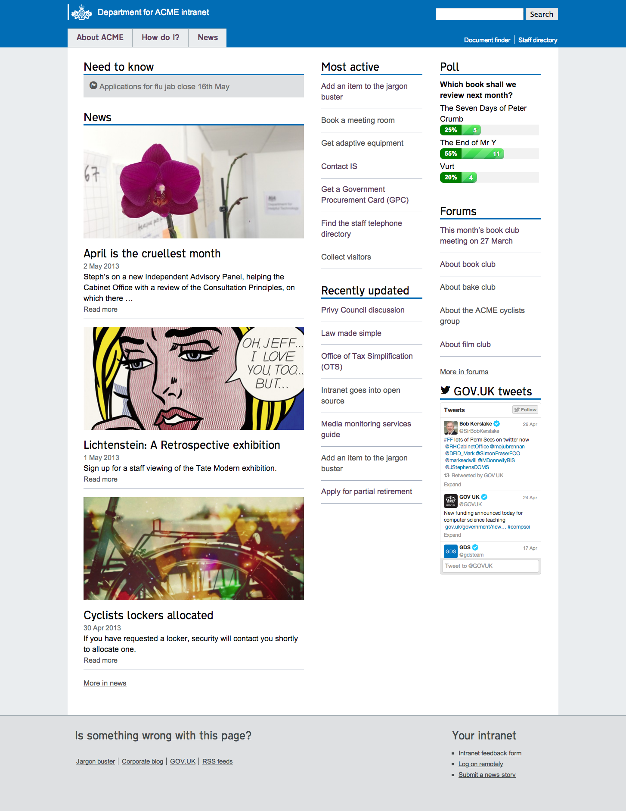
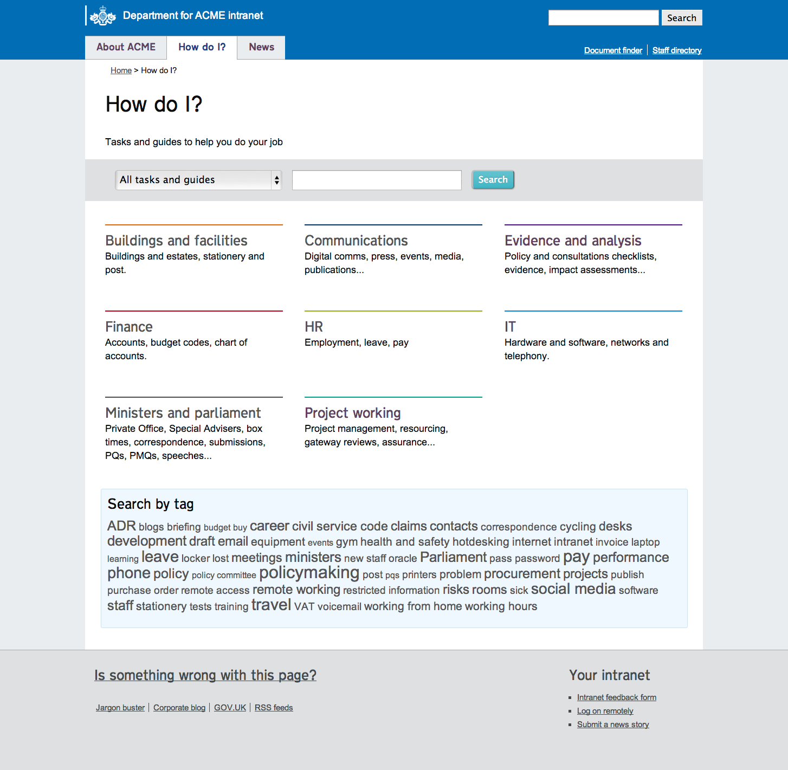

Modelos — referência estática
Tema de WordPress estilo GOV.UK (2013), com seções de notícias, tarefas, guias, projetos,
vagas e blog. Depende do plugin Pods numa versão antiga (API pods_url_variable(),
hoje descontinuada) e não traz conteúdo de exemplo — rodar isso de verdade exigiria montar
WordPress + MySQL + Pods e cadastrar conteúdo manualmente, com risco real de incompatibilidade.

